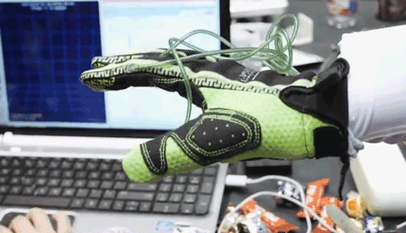
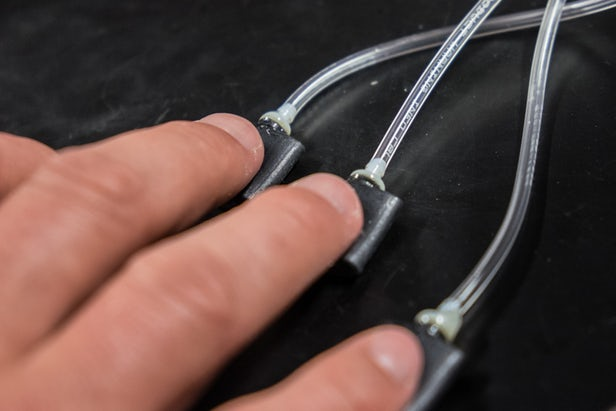

The Future of Virtual Reality:
Omni Technology
Hands Omni
Using popular virtual reality technology, such as the Oculus Rift, you are limited to strictly seeing the world around you. Your sense of touch is non existent unless you count gripping the controller you are using. With the Hands Omni, which is still in the early stages of development, you can touch, feel, and grab items in the virtual world while feeling the resistance on your actual hand. Allowing you to feel virtual items in the real world add an entire new layer of depth to the virtual reality field and opens up many possibilities for new, even more advanced technology to come.
How Do Gloves Do This?
This new technology comes in the form of a glove that you slip on your hands. Under the fingertips of each glove are small inflatable pockets. Depending on which fingers or part of the hand is interacting with the virtual object, those pockets expand, providing resistance to the fingers. Although this concept is amazing, I’m not quite sure if this is the best way of executing the desired effect. Some of the flaws in this idea are that there is nothing stopping you from proceeding to move your hand through the object. Although you feel slight pressure/resistance on your fingers, it does not prevent you from moving it further. There is also nothing preventing your wrist from flicking your hand through a virtual object either. These flaws can cause many issues and leave large gaps in the immersive experience. Thankfully, this technology is still in its very early stages of development, so there is still a lot of improvement Omni can make in the fundamentals of these gloves.